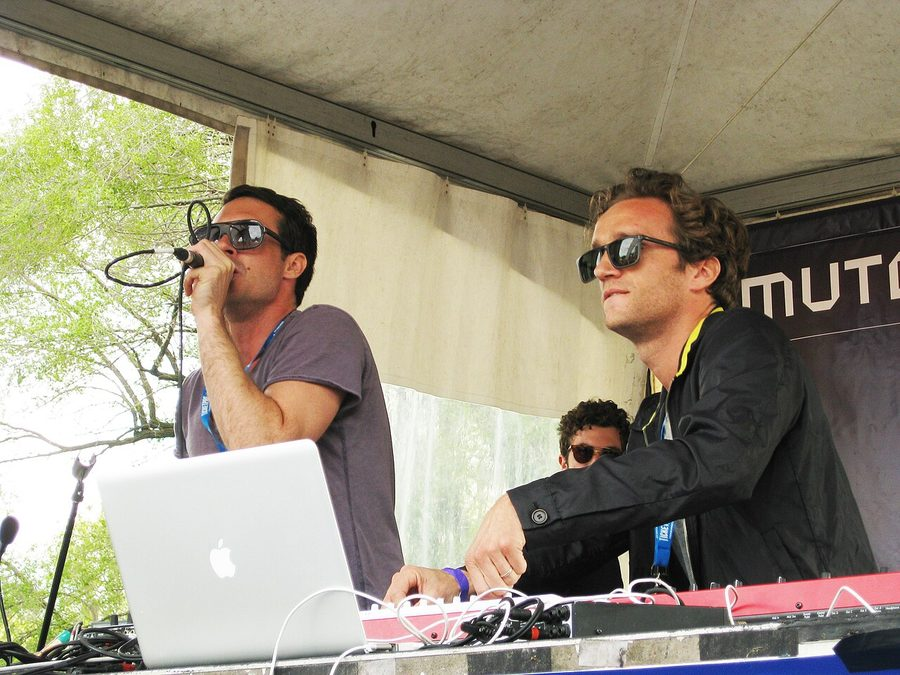

Benoit & Sergio - Your Darkness EP on Visionquest



Benoit & Sergio are a duo hailing respectively from the US and France, and here they make their return to the Visionquest stable for a new 3-track EP, where we again deliver their lighter, cheekier, vocal-based take on what’s generally a darker focus for the label.
The lead A-side Splash keeps things in a grindy, funky, broken groove for its first half; a punchy bassline and a cheeky female vocal appearing alongside the typically stripped-back tech house aesthetics.
Eventually dropping into a regular groove, it strikes a tone that swaps on heads-down seriousness for one that’s more detached and irreverent, its sense of humor well intact.
It’s an energy that permeates the remaining tracks on the EP. The quirky acid line that sqiggles its way through Your Darkness keeps things breezy, while the ‘Beat Macho’ B-side does an even better job of striking a humorous tone via its delightfully ironic vocal samples (with a little bit of help from its bouncy house beat).
The Your Darkness doesn’t do an enormous amount to stand out from the pack; though it does brings a lighter, bouncier tone to the usual tech house template, which will really get the job done for DJs wishing to add a dash of colour and humour to their sets.
***
Title: Your Darkness EP
Label: Visionquest
TracklistSplashYour DarknessBeat Macho
www.yourvisionquest.com
www.facebook.com/benoitandsergio
Our rating: 6.5/10